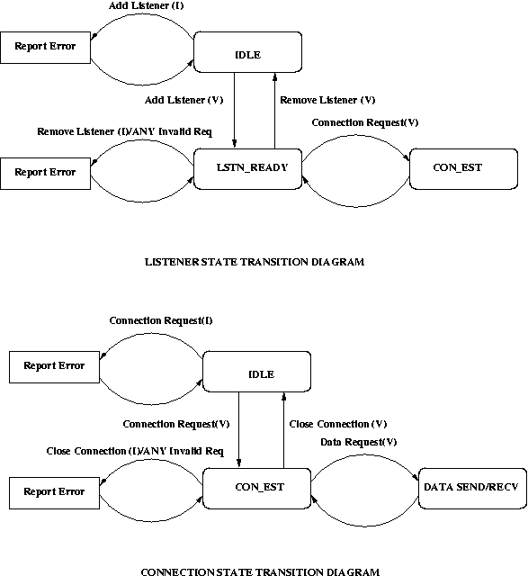

| Document id | : | ITS-FTP-CDSU_NHTCP-001 |
| Document name | : | Generic TCP Network Handler Feature Test Plan |
| Author(s) | : | Sumit Bijwe |
| Contributors | : | Seema Jain, Vijaya Kumar |
| Approved By | : | Prakash R. |
| Document Source | : | Softswitch and Media Gateway BU, C-DOT, Bangalore |
| Copyright © 2003 by C-DOT. All rights reserved. Contents of publication may not be reproduced in any form without permission from C-DOT. |
| Document History | ||||
|---|---|---|---|---|
| Version No | Revised By | Released On | Approved By | Remarks |
| Draft 1 | Sumit Bijwe | March 17, 2004 | Prakash R | |
| |
|
|
|
|
| |
|
|
|
|
| |
|
|
|
|
| |
|
|
|
|
1. Introduction 1.1 Purpose and Scope 1.2 References 1.3 Definitions, Acronyms and Abbreviations 2. Test items 3. Features to be tested 4. Features not to be tested 5. Approach 5.1.Description 5.2. Constraints 6. Testing Environment 7. Schedule 8.Risks and contingencies 9.Test Case Specification 10.Approvals
This document provides a test plan for generic network handler module which is the part of basic utility kit. It has two following interfaces.
| [mdd] | : | Module Design Document of TCP Network Handler. |
| [C++NP] | : | C++ Network Programming : Douglas C. Schmidt and Stephen D. Huston . |
Note: User Layer Functionalities Testing should be done with the various conditions,
The testing approach is different as per MI and UI interfaces. MI testing functionalities is based on state transitions of TCP network handler and System Management API parameter validation. UI testing functionalities is based on the normal tcp connection, listeners states. and also User Layer API parameter validations.
Black box testing approach is used which just checks what a program is supposed to do without going into the program structure.
None
The test setup is as follows:
The Test Setup which is shown in the above diagram depicts that there will be two test stub.
TBD
TBD
Figure Test Cases analysis diagram for system management.
Note: Test Case Id described as Module/Interface/State/Functionality in following Test Case Description Tables.
Module : TCP
Interface : Either System Management of User Layer.
State : The current state of a module on which the test functionality has to be
run.
| Test Case Id | Remarks |
|---|---|
| TCP/MI/IDLE/INIT_NH(V) | Valid Parameter passed to cdSuNhTcpMiInit by Local System Management. |
| TCP/MI/IDLE/INIT_NH(I) | Invalid Parameter passed to cdSuNhTcpMiInit by Local System Management. |
| TCP/MI/CRE/GEN_CFG_NH(V) | Valid Parameter passed to cdSuNhTcpMiCfgReq by Local System Management. |
| TCP/MI/CRE/GEN_CFG_NH(I) | Invalid Parameter passed to cdSuNhTcpMiCfgReq by Local System Management. |
| TCP/MI/CRE/STRT_NH(V) | Valid Parameter passed to cdSuNhTcpMiCtrlReq by Local System Management. |
| TCP/MI/CRE/STRT_NH(I) | Invalid Parameter passed to cdSuNhTcpMiCtrlReq by Local System Management. |
| TCP/MI/RUN/STOP_NH(V) | Valid Parameter passed to cdSuNhTcpMiCtrlReq by Local System Management. |
| TCP/MI/RUN/STOP_NH(I) | Invalid Parameter passed to cdSuNhTcpMiCtrlReq by Local System Management. |
| TCP/MI/CRE/DEL_NH(V) | Valid Parameter passed to cdSuNhTcpMiDelNhReq by Local System Management. |
| TCP/MI/CRE/DEL_NH(I) | Invalid Parameter passed to cdSuNhTcpMiDelNhReq by Local System Management. |
| TCP/MI/CRE/TERMINATE_NH(V) | Valid Parameter passed to cdSuNhTcpMiTerminate by Local System Management. |
| TCP/MI/CRE/TERMINATE_NH(I) | Invalid Parameter passed to cdSuNhTcpMiTerminate by Local System Management. |
| TCP/MI/ANY/STATUS_REQ(V) | Valid Parameter passed to cdSuNhTcpMiStatus by Local System Management. |
| TCP/MI/ANY/STATUS_REQ(I) | Invalid Parameter passed to cdSuNhTcpMiStatus by Local System Management. |
| TCP/MI/RUN/STATS_REQ(V) | Valid Parameter passed to cdSuNhTcpMiStsReq by Local System Management. |
| TCP/MI/RUN/STATS_REQ(I) | Invalid Parameter passed to cdSuNhTcpMiStsReq by Local System Management. |
| TCP/MI/IDLE/INIT_NH_MULTI(V) | Call cdSuNhTcpMiInit within range MAX_NHTCP_INSTANCE by Local System Management. |
| TCP/MI/IDLE/INIT_NH_MULTI(I) | Call cdSuNhTcpMiInit by Local System Management more than MAX_NHTCP_INSTANCE limit. |
User Layer Interface Functionalities
Figure :User Layer API sequence.
Figure :Test Cases analysis diagram for Listener and Connection.
| Test Id | Remarks |
|---|---|
| TCP/UI/RUN/ADD_LISTNER(V) | Valid Parameter passed to cdSuNhTcpUiAddLstnReq by User Layer. |
| TCP/UI/RUN/ADD_LISTNER(I) | Invalid Parameter passed to cdSuNhTcpUiAddLstnReq by User Layer. |
| TCP/UI/RUN/DEL_LISTNER(V) | Valid Parameter passed to cdSuNhTcpUiRemLstnReq by User Layer. |
| TCP/UI/RUN/DEL_LISTNER(I) | Invalid Parameter passed to cdSuNhTcpUiRemLstnReq by User Layer. |
| TCP/UI/RUN/CONN_REMT(V) | Valid Parameter passed to cdSuNhTcpUiConReq by User Layer. |
| TCP/UI/RUN/CONN_REMT(I) | Invalid Parameter passed to cdSuNhTcpUiConReq by User Layer. |
| TCP/UI/RUN/ACCPT_CONN(V) | Add a listener(local), and make connection request from remote. |
| TCP/UI/RUN/SEND_DATA_TPKT(V) | Valid Parameter passed to cdSuNhTcpUiDataReq by User Layer. |
| TCP/UI/RUN/SEND_DATA_NO_TPKT(V) | Valid Parameter passed to cdSuNhTcpUiDataReq by User Layer. |
| TCP/UI/RUN/SEND_DATA(I) | Invalid Parameter passed to cdSuNhTcpUiDataReq by User Layer. |
| TCP/UI/RUN/RECV_DATA | Add a listener(local), make connection and send data on a connection from remote. |
| TCP/UI/RUN/UL_DISCONNECT(V) | Valid Parameter passed to cdSuNhTcpUiCloseConReq by User Layer. |
| TCP/UI/RUN/UL_DISCONNECT(I) | Invalid Parameter passed to cdSuNhTcpUiCloseConReq by User Layer. |
| TCP/UI/RUN/RM_DISCONNECT(V) | Valid Parameter passed to cdSuNhTcpUiCloseConReq by Remote. |
Load Testing: Test Cases
| Test Id | Remarks |
|---|---|
| TCP/UI/RUN/ADD_MULT_LISTNER | Valid Parameter passed to cdSuNhTcpUiAddLstnReq by User Layer to add multiple listeners(1000). |
| TCP/UI/RUN/DEL_MULT_LISTNER | Valid Parameter passed to cdSuNhTcpUiAddLstnReq by User Layer to add multiple listeners(1000). |
| TCP/UI/RUN/CONN_MULT_REMT | Make mulitple connection(1000) with single listener at a remote end. |
| TCP/UI/RUN/CONN_MULT_ACCEPT | Add a listener(local), and make mulitple connection(1000) from remote. |
| TCP/UI/RUN/SEND_MULT_DATA_TPKT | Open mulitple connection(1000) requests and send data on each connection from User Layer. |
| TCP/UI/RUN/SEND_MULT_DATA_NO_TPKT | Open mulitple connection(1000) requests and send data on each connection from User Layer. |
| TCP/UI/RUN/RECV_MULT_DATA | Add a listener(local),make mulitple connection(1000) and send data on each connection from Remote. |
| TCP/UI/RUN/UL_MULT_DISCONNECT | Valid Parameter passed to cdSuNhTcpUiCloseConReq by User Layer to close multiple connection(1000). |
| TCP/UI/RUN/RM_MULT_DISCONNECT | Valid Parameter passed to cdSuNhTcpUiCloseConReq by remote to close multiple connection(1000). |
Init Parameter Validations: Test Cases
| Test Id | Remarks |
|---|---|
| TCP/UI/RUN/PV_MAX_NO_CONN | Try to open connection more than MAX_NO_CONN specified in cdSuNhTcpMiInit parameters. |
| TCP/UI/RUN/PV_MAX_NO_LSTN | Try to add listener more than MAX_NO_LSTN specified in cdSuNhTcpMiInit parameters. |
| TCP/UI/RUN/PV_MAX_BUF_LEN | Try to send data more than MAX_BUF_LEN specified in cdSuNhTcpMiInit parameters. |
| Item | Information |
|---|---|
| Test Case | TCP/MI/IDLE/INIT_NH(V) |
| Purpose | To test init network handler function. |
| Pre-Test Condition | Null. |
| Expected Outcome | MI will get CdSuNhTcpInstId. |
| Test Description | Call function cdSuNhTcpMiInit with valid parmeters such as.
|
| Item | Information |
|---|---|
| Test Case | TCP/MI/IDLE/INIT_NH(I) |
| Purpose | To test init network handler function. |
| Pre-Test Condition | Null. |
| Expected Outcome | MI will get CDSU_NHTCP_INV_NHINSTID as a CdSuNhTcpInstId. |
| Test Description | Call function cdSuNhTcpMiInit with either of these invalid parmeters such as.
|
| Item | Information |
|---|---|
| Test Case | TCP/MI/CRE/GEN_CFG_NH(V) |
| Purpose | To test general configuration of Network Handler with valid parameters. |
| Pre-Test Condition | TCP/MI/IDLE/INIT_CFG_NH is successful. |
| Expected Outcome | MI gets CDSU_NHTCP_MI_CNFG_GENERAL_RSP with CDSU_NHTCP_RSPCODE_SUCCESS |
| Test Description | Call cdSuNhTcpMiCnfgReq function with following parmeters.
|
| Item | Information |
|---|---|
| Test Case | TCP/MI/CRE/GEN_CFG_NH(I) |
| Purpose | To test general configuration of Network Handler with Invalid parameters. |
| Pre-Test Condition | TCP/MI/IDLE/INIT_CFG_NH is successful. |
| Expected Outcome | API returns false. |
| Test Description | Call cdSuNhTcpMiCnfgReq function with either of these following parmeters.
|
| Item | Information |
|---|---|
| Test Case | TCP/MI/CRE/STRT_NH(V) |
| Purpose | To test control request API of Network Handler with valid parameter. |
| Pre-Test Condition | TCP/MI/IDLE/INIT_NH is successful. |
| Expected Outcome | API will return true and MI gets CDSU_NHTCP_MI_START_NH_RSP with CDSU_NHTCP_RSPCODE_SUCCESS |
| Test Description | Call cdSuNhTcpMiCnfgReq function with either of these following parmeters.
|
| Item | Information |
|---|---|
| Test Case | TCP/MI/CRE/STRT_NH(I) |
| Purpose | To test control request API of Network Handler with invalid parameters. |
| Pre-Test Condition | TCP/MI/CRE/INIT_NH is successful. |
| Expected Outcome | API will return false. |
| Test Description | Call cdSuNhTcpMiCnfgReq function with either of these following parmeters.
|
| Item | Information |
|---|---|
| Test Case | TCP/MI/RUN/STOP_NH(V) |
| Purpose | To test stop control request API of Network Handler with valid parameter. |
| Pre-Test Condition | TCP/MI/CRE/START_NH is successful. |
| Expected Outcome | API will return true and MI gets CDSU_NHTCP_MI_STOP_NH_RSP with CDSU_NHTCP_RSPCODE_SUCCESS |
| Test Description | Call cdSuNhTcpMiCnfgReq function with either of these following parmeters.
|
| Item | Information |
|---|---|
| Test Case | TCP/MI/RUN/STOP_NH(I) |
| Purpose | To test control request API of Network Handler with invalid parameters. |
| Pre-Test Condition | TCP/MI/CRE/START_NH(V) is successful. |
| Expected Outcome | API will return false or MI gets CDSU_NHTCP_MI_STOP_NH_RSP with CDSU_NHTCP_RSPCODE_FAIL |
| Test Description | Call cdSuNhTcpMiCnfgReq function with either of these following parmeters.
|
| Item | Information |
|---|---|
| Test Case | TCP/MI/CRE/DEL_NH(V) |
| Purpose | To test delete NH Tcp API of Network Handler with valid parameters. |
| Pre-Test Condition | TCP/MI/RUN/STOP_NH(V) is successful. |
| Expected Outcome | API will return true or MI gets CDSU_NHTCP_MI_DEL_NH_RSP with CDSU_NHTCP_RSPCODE_SUCCESS. |
| Test Description | Call cdSuNhTcpMiNhDelReq function with the following parmeters.
|
| Item | Information |
|---|---|
| Test Case | TCP/MI/CRE/DEL_NH(I) |
| Purpose | To test delete NH Tcp API of Network Handler with invalid parameters. |
| Pre-Test Condition | TCP/MI/RUN/STOP_NH(V) is successful. |
| Expected Outcome | API will return false or MI gets CDSU_NHTCP_MI_DEL_NH_RSP with CDSU_NHTCP_RSPCODE_FAIL. |
| Test Description | Call cdSuNhTcpMiNhDelReq function with either of these following parmeters.
|
| Item | Information |
|---|---|
| Test Case | TCP/MI/CRE/TERMINATE_NH(V) |
| Purpose | To test terminate NH Tcp API of Network Handler with valid parameters. |
| Pre-Test Condition | TCP/MI/CRE/DEL_NH(V) is successful. |
| Expected Outcome | API will return true. |
| Test Description | Call cdSuNhTcpMiTerminate function with the following parmeters.
|
| Item | Information |
|---|---|
| Test Case | TCP/MI/CRE/TERMINATE_NH(I) |
| Purpose | To test terminate NH Tcp API of Network Handler with invalid parameters. |
| Pre-Test Condition | TCP/MI/CRE/DEL_NH(V) is successful. |
| Expected Outcome | API will return false. |
| Test Description | Call cdSuNhTcpMiTerminate function with either of these following parmeters.
|
| Item | Information |
|---|---|
| Test Case | TCP/MI/ANY/STATUS_REQ(V) |
| Purpose | To test status of tcp network handler with valid parameters. |
| Pre-Test Condition | TCP/MI/IDLE/INIT_NH(V) is successful. |
| Expected Outcome | API returns true and MI gets CDSU_NHTCP_MI_STATUS_RSP with CDSU_NHTCP_RSPCODE_SUCCESS |
| Test Description | Call cdSuNhTcpMiStatusReq function with valid parmeters.
|
| Item | Information |
|---|---|
| Test Case | TCP/MI/ANY/STATUS_REQ(I) |
| Purpose | To test status of tcp network handler with invalid parameters. |
| Pre-Test Condition | TCP/MI/IDLE/INIT_NH(V) is successful. |
| Expected Outcome | API returns false. |
| Test Description | Call cdSuNhTcpMiStatusReq function with either of these following invalid parmeters.
|
| Item | Information |
|---|---|
| Test Case | TCP/MI/RUN/STATS_REQ(V) |
| Purpose | To test the statistical information by Network Handler with valid parameters. |
| Pre-Test Condition | TCP/MI/STRT_NH is successful. |
| Expected Outcome | API call returns true and MI gets CDSU_NHTCP_MI_STATISTICS_RSP with CDSU_NHTCP_RSPCODE_SUCCESS |
| Test Description | Call function cdSuNhTcpMiStsReq with appropriate parmeters.
|
| Item | Information |
|---|---|
| Test Case | TCP/MI/RUN/STATS_REQ(I) |
| Purpose | To test the statistical information by Network Handler with invalid parameters. |
| Pre-Test Condition | TCP/MI/CRE/STRT_NH is successful. |
| Expected Outcome | API call returns false. |
| Test Description | Call function cdSuNhTcpMiStsReq with appropriate parmeters.
|
| Item | Information |
|---|---|
| Test Case | TCP/MI/IDLE/INIT_NH_MULTI(V) |
| Purpose | To test creation of mulitple network handler instances with valid range of NH instances. |
| Pre-Test Condition | Null. |
| Expected Outcome | Upto MAX_NHTCP_INSTANCES API returns valid CdSuNhTcpInstId. |
| Test Description | Call cdSuNhTcpMiInit as many times(with in range of MAX_NHTCP_INSTANCES) |
| Item | Information |
|---|---|
| Test Case | TCP/MI/IDLE/INIT_NH_MULTI(I) |
| Purpose | To test multiple init NH out of MAX_NHTCP_INSTANCES limit. |
| Pre-Test Condition | Null. |
| Expected Outcome | Upto MAX_NHTCP_INSTANCES API returns valid CdSuNhTcpInstId upto MAX_NHTCP_INSTANCES and then starts returning CDSU_NHTCP_INV_NHINSTID. |
| Test Description | Call cdSuNhTcpMiInit as many times MAX_NHTCP_INSTANCES overflows. |
| Item | Information |
|---|---|
| Test Case | TCP/UI/RUN/ADD_LISTNER(V) |
| Purpose | To test add listener functionality with valid parameters. |
| Pre-Test Condition | TCP/MI/STRT_NH is successful. |
| Expected Outcome | API returns valid CdSuNhTcpLstnKey and UI gets CDSU_NHTCP_UI_ADD_LISTENER_RSP with CDSU_NHTCP_RSPCODE_SUCCESS |
| Test Description | Call function cdSuNhTcpUiAddLstnReq with following valid parmeters.
|
| Item | Information |
|---|---|
| Test Case | TCP/UI/RUN/ADD_LISTNER(I) |
| Purpose | To test add listener functionality with invalid parameters. |
| Pre-Test Condition | TCP/MI/STRT_NH is successful. |
| Expected Outcome | API returns invalid CdSuNhTcpLstnKey or UI gets CDSU_NHTCP_UI_ADD_LISTENER_RSP with CDSU_NHTCP_RSPCODE_FAIL |
| Test Description | Call function cdSuNhTcpUiAddLstnReq with following valid parmeters.
|
| Item | Information |
|---|---|
| Test Case | TCP/UI/RUN/DEL_LISTNER(V) |
| Purpose | To test remove listener functionality with valid parameters. |
| Pre-Test Condition | TCP/MI/ADD_LISTNER is successful. |
| Expected Outcome | UI gets CDSU_NHTCP_UI_DEL_LISTENER_RSP with CDSU_NHTCP_RSPCODE_SUCCESS |
| Test Description | Call cdSuNhTcpUiRemLstnReq function with following valid parmeters.
|
| Item | Information |
|---|---|
| Test Case | TCP/UI/RUN/DEL_LISTNER(I) |
| Purpose | To test remove listener functionality with invalid parameters. |
| Pre-Test Condition | TCP/MI/ADD_LISTNER is successful. |
| Expected Outcome | API call returns false or UI gets CDSU_NHTCP_UI_DEL_LISTENER_RSP with CDSU_NHTCP_RSPCODE_SUCCESS |
| Test Description | Call cdSuNhTcpUiRemLstnReq function with following valid parmeters.
|
| Item | Information |
|---|---|
| Test Case | TCP/UI/RUN/CONN_REMT(V) |
| Purpose | To test open connection with remote functionality with valid parameters. |
| Pre-Test Condition | TCP/MI/STRT_NH is successful. |
| Expected Outcome | API returns valid CdSuNhTcpConnKey and UI gets CDSU_NHTCP_UI_CONNECT_RSP with CDSU_NHTCP_RSPCODE_SUCCESS |
| Test Description | Call cdSuNhTcpUiConReq function with following valid parmeters.
|
| Item | Information |
|---|---|
| Test Case | TCP/UI/RUN/CONN_REMT(I) |
| Purpose | To test open connection with remote functionality with invalid parameters. |
| Pre-Test Condition | TCP/MI/STRT_NH is successful. |
| Expected Outcome | API returns invalid CdSuNhTcpConnKey or UI gets CDSU_NHTCP_UI_CONNECT_RSP with CDSU_NHTCP_RSPCODE_FAIL |
| Test Description | Call cdSuNhTcpUiConReq function with following valid parmeters.
|
| Item | Information |
|---|---|
| Test Case | TCP/UI/RUN/ACCPT_CONN(V) |
| Purpose | To test accept connections when a listener is set locally. |
| Pre-Test Condition | TCP/UI/RUN/ADD_LISTNER is successful. |
| Expected Outcome | UI gets new connection indication. |
| Test Description | Call cdSuNhTcpUiAddLstnReq function with valid parmeters, then connect as a client to that listener port from remote test stub. |
| Item | Information |
|---|---|
| Test Case | TCP/UI/RUN/SEND_DATA_TPKT(V) |
| Purpose | To test sending data to the remote end with valid parameters and TPKT = true. |
| Pre-Test Condition | TCP/MI/STRT_NH is successful and Connection should be present with TPKT attribute true. |
| Expected Outcome | UI gets CDSU_NHTCP_UI_DATA_RSP with CDSU_NHTCP_RSPCODE_SUCCESS |
| Test Description | Call cdSuNhTcpUiDataReq function with following valid parmeters.
|
| Item | Information |
|---|---|
| Test Case | TCP/UI/RUN/SEND_DATA_NO_TPKT(V) |
| Purpose | To test sending data to the remote end with valid parameters and TPKT = false. |
| Pre-Test Condition | TCP/MI/STRT_NH is successful and Connection should be present with TPKT attribute false. |
| Expected Outcome | UI gets CDSU_NHTCP_UI_DATA_RSP with CDSU_NHTCP_RSPCODE_SUCCESS |
| Test Description | Call cdSuNhTcpUiDataReq function with following valid parmeters.
|
| Item | Information |
|---|---|
| Test Case | TCP/UI/RUN/SEND_DATA(I) |
| Purpose | To test sending data to the remote end with invalid parameters. |
| Pre-Test Condition | TCP/MI/STRT_NH is successful and Connection should be present. |
| Expected Outcome | API returns false or UI gets CDSU_NHTCP_UI_DATA_RSP with CDSU_NHTCP_RSPCODE_SUCCESS |
| Test Description | Call cdSuNhTcpUiDataReq function with following invalid parmeters.
|
| Item | Information |
|---|---|
| Test Case | TCP/UI/RUN/RECV_DATA(V) |
| Purpose | To test data receiving on a connection. |
| Pre-Test Condition | TCP/UI/RUN/ACCPT_CONN(V) is successful. |
| Expected Outcome | UI connection event handler gets data indication. |
| Test Description | Call cdSuNhTcpUiAddLstnReq function with valid parmeters, then connect as a client to that listener port from remote test stub and send data on the conncetion. |
| Item | Information |
|---|---|
| Test Case | TCP/UI/RUN/UL_DISCONNECT(V) |
| Purpose | To test close connection by user layer with valid parameters. |
| Pre-Test Condition | TCP/UI/RUN/ACCPT_CONN(V) or TCP/UI/RUN/CONN_REMT(V) is successful. |
| Expected Outcome | UI connection event handler gets close connection response/indication. |
| Test Description | Call cdSuNhTcpUiCloseConReq function with following valid parmeters from local test
stub.
|
| Item | Information |
|---|---|
| Test Case | TCP/UI/RUN/RM_DISCONNECT(V) |
| Purpose | To test close connection by user layer of remote test stub with valid parameters. |
| Pre-Test Condition | TCP/UI/RUN/ACCPT_CONN(V) or TCP/UI/RUN/CONN_REMT(V) is successful. |
| Expected Outcome | UI connection event handler gets close connection response/indication. |
| Test Description | Call cdSuNhTcpUiCloseConReq function with following valid parmeters from
remote test stub.
|
| Item | Information |
|---|---|
| Test Case | TCP/UI/RUN/UL_DISCONNECT(I) |
| Purpose | To test close connection by user layer with invalid parameters. |
| Pre-Test Condition | TCP/UI/RUN/ACCPT_CONN(V) or TCP/UI/RUN/CONN_REMT(V) is successful. |
| Expected Outcome | API returns false or UI connection event handler gets CDSU_NHTCP_UI_CLOSE_CON_RSP with CDSU_NHTCP_RSPCODE_FAIL. |
| Test Description | Call cdSuNhTcpUiCloseConReq function with following valid parmeters from local test
stub.
|
Load Testing: Test Cases Descriptions
| Item | Information |
|---|---|
| Test Case | TCP/UI/RUN/ADD_MULT_LISTNER |
| Purpose | To test add listener functionality in load conditions. |
| Pre-Test Condition | TCP/MI/STRT_NH is successful. |
| Expected Outcome | UI gets CDSU_NHTCP_UI_ADD_LISTENER_RSP with CDSU_NHTCP_RSPCODE_SUCCESS for every requrest. |
| Test Description | Call function cdSuNhTcpUiAddLstnReq with valid parmeters multiple
times(1000).
|
| Item | Information |
|---|---|
| Test Case | TCP/UI/RUN/DEL_MULT_LISTNER |
| Purpose | To test remove listener functionality in load conditions. |
| Pre-Test Condition | TCP/MI/ADD_MULT_LISTNER is successful. |
| Expected Outcome | UI gets CDSU_NHTCP_UI_DEL_LISTENER_RSP with CDSU_NHTCP_RSPCODE_SUCCESS for each request. |
| Test Description | Call cdSuNhTcpUiRemLstnReq function with valid following parmeters, for as many
as listener added.
|
| Item | Information |
|---|---|
| Test Case | TCP/UI/RUN/CONN_MULT_REMT |
| Purpose | To test open connection with remote functionality in load conditions. |
| Pre-Test Condition | TCP/MI/STRT_NH is successful. |
| Expected Outcome | API returns valid CdSuNhTcpConnKeys and UI gets CDSU_NHTCP_UI_CONNECT_RSP with CDSU_NHTCP_RSPCODE_SUCCESS for each request. |
| Test Description | Call cdSuNhTcpUiConReq function with following valid parmeters, many times(1000).
|
| Item | Information |
|---|---|
| Test Case | TCP/UI/RUN/CONN_MULT_ACCPT |
| Purpose | To test accept multiple connections when listener is set. |
| Pre-Test Condition | TCP/UI/RUN/ADD_LISTNER is successful. |
| Expected Outcome | UI gets new connection indications. |
| Test Description | Call cdSuNhTcpUiAddLstnReq function with following valid parmeters, then connect
1000 times as a client to that listener port, from remote test stub.
|
| Item | Information |
|---|---|
| Test Case | TCP/UI/RUN/SEND_MULT_DATA_TPKT |
| Purpose | To test sending data on multiple connection in load conditions. |
| Pre-Test Condition | TCP/MI/CONN_MULT_REMT is successful and connection has TPKT flag = true. |
| Expected Outcome | UI gets CDSU_NHTCP_UI_DATA_RSP with CDSU_NHTCP_RSPCODE_SUCCESS for each data sent. |
| Test Description | Call cdSuNhTcpUiDataTxReq function with following valid parmeters, on multiple
connection.
|
| Item | Information |
|---|---|
| Test Case | TCP/UI/RUN/SEND_MULT_DATA_NO_TPKT |
| Purpose | To test sending data on multiple connection in load conditions. |
| Pre-Test Condition | TCP/MI/CONN_MULT_REMT is successful and connection has TPKT flag = false. |
| Expected Outcome | UI gets CDSU_NHTCP_UI_DATA_RSP with CDSU_NHTCP_RSPCODE_SUCCESS for each data sent. |
| Test Description | Call cdSuNhTcpUiDataTxReq function with following valid parmeters, on multiple
connection.
|
| Item | Information |
|---|---|
| Test Case | TCP/UI/RUN/RECV_MULT_DATA |
| Purpose | To test data receiving on multiple connection. |
| Pre-Test Condition | TCP/UI/RUN/CONN_MULT_ACCEPT is successful. |
| Expected Outcome | UI gets mulitple data indications. |
| Test Description | Call cdSuNhTcpUiAddLstnReq function with valid parmeters, then connect as a client to that listener port from remote test stub and send data 2000 times on the conncetion. |
| Item | Information |
|---|---|
| Test Case | TCP/UI/RUN/UL_MULT_DISCONNECT(V) |
| Purpose | To test close connection by user layer with valid parameters in load conditions. |
| Pre-Test Condition | TCP/UI/RUN/ACCPT_CONN(V) or TCP/UI/RUN/CONN_REMT(V) is successful. |
| Expected Outcome | UI connection event handler gets close connection response/indication. |
| Test Description | Call cdSuNhTcpUiCloseConReq function with following valid parmeters from local test
stub for 1000 connections.
|
| Item | Information |
|---|---|
| Test Case | TCP/UI/RUN/RM_DISCONNECT(V) |
| Purpose | To test close connection by user layer of remote test stub with valid parameters in load conditions. |
| Pre-Test Condition | TCP/UI/RUN/ACCPT_CONN(V) or TCP/UI/RUN/CONN_REMT(V) is successful. |
| Expected Outcome | UI connection event handler gets close connection response/indication. |
| Test Description | Call cdSuNhTcpUiCloseConReq function with following valid parmeters from
remote test stub for 1000 connections.
|
Init Parameter Validations: Test Cases Descriptions
| Item | Information |
|---|---|
| Test Case | TCP/UI/RUN/PV_MAX_NO_CONN |
| Purpose | To test NH Tcp does it allow UL more than MAX_NO_CONN which specified in cdSuNhTcpMiInit parameters. |
| Pre-Test Condition | TCP/MI/STRT_NH(V) is successful. |
| Expected Outcome | API return valid CdSuNhTcpConnKey and UI will get CDSU_NHTCP_OPEN_CONN_RSP with CDSU_NHTCP_RSPCODE_FAIL for the last cdSuNhTcpUiConReq which exceeds MAX_NO_CONN limit. |
| Test Description | Call cdSuNhTcpUiConReq function with following valid parmeters more than
MAX_NO_CONN limit.
|
| Item | Information |
|---|---|
| Test Case | TCP/UI/RUN/PV_MAX_NO_LSTN |
| Purpose | To test NH Tcp does it allow UL more than MAX_NO_LSTN which specified in cdSuNhTcpMiInit parameters. |
| Pre-Test Condition | TCP/MI/STRT_NH(V) is successful. |
| Expected Outcome | API returns valid CdSuNhTcpLstnKey UI will get CDSU_NHTCP_ADD_LSTN_RSP with CDSU_NHTCP_RSPCODE_FAIL for the last cdSuNhTcpUiAddLstnReq which exceeds MAX_NO_LSTN limit. |
| Test Description | Call cdSuNhTcpUiAddLstnReq function with following valid parmeters more than
MAX_NO_LSTN limit.
|
| Item | Information |
|---|---|
| Test Case | TCP/UI/RUN/PV_MAX_BUF_LEN |
| Purpose | To test NH Tcp does it allow UL to send data more than MAX_BUF_LEN which specified in cdSuNhTcpMiInit parameters. |
| Pre-Test Condition | TCP/MI/STRT_NH(V) is successful.and Connection does exists. |
| Expected Outcome | UI will get CDSU_NHTCP_DATA_REQ_RSP with CDSU_NHTCP_RSPCODE_FAIL. |
| Test Description | Call cdSuNhTcpUiDataReq function with following valid parmeters more than
MAX_NO_LSTN limit.
|